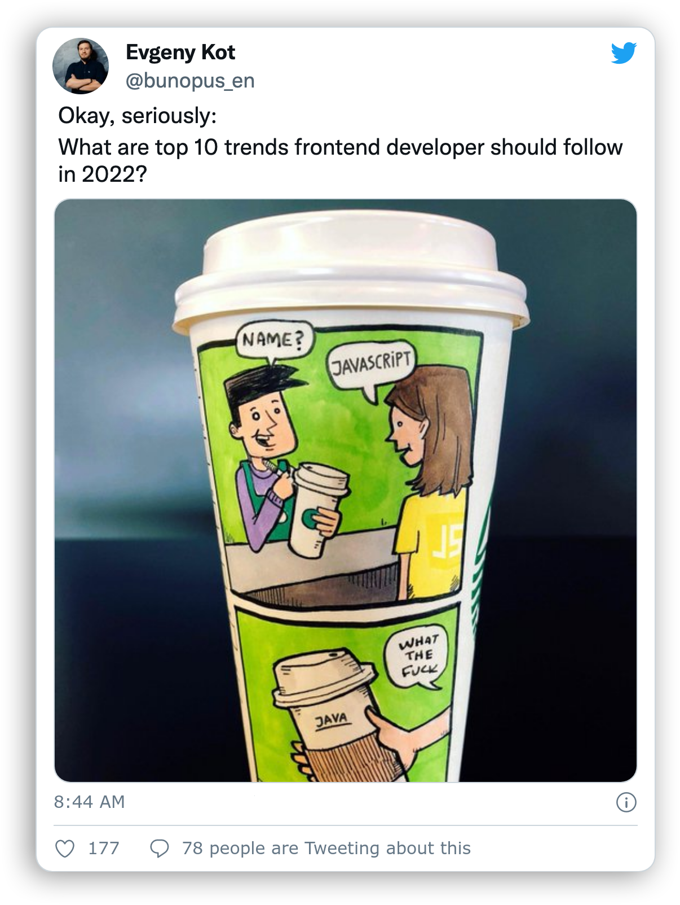

Evgeny kot- Quo vadis, frontend?
- HINT #1: wait for the "loading" to disappear
- HINT #2: ESC - structure, SPACE, →↓←↑ - navigate
- HINT #3: 16:9 - best screen ratio!

FRONTEND
The history of frontend
FRONTEND-O-METER
Quo vadis, frontend?
Quo vadis, frontend?
top 10 trends

10
10
HTTP/ 3
QUIC
- multiplexing and better error management
- controls network congestion better
- uses the HTTP/2 priority mechanism
- better network usage
- requires less CPU
- allows connection migrations
9
Smart rendering
SSR
SSR
- Next.js
- Remix
- Gatsby??
8
8
One store - multiple stores

Examples
- react-query
Examples
- react-query
- SWR
import useSWR from 'swr'
function Profile() {
const {data, error} = useSWR('/api/user',fetcher)
if (error) return failed to load
if (!data) return loading...
return hello {data.name}!
}
Examples
- react-query
- SWR
- Effector
import {createStore, createEvent} from 'effector'
import {useStore} from 'effector-react'
const increment = createEvent()
const decrement = createEvent()
const resetCounter = createEvent()
const counter = createStore(0)
.on(increment, state => state + 1)
.on(decrement, state => state - 1)
.reset(resetCounter)
counter.watch(console.log)
const Counter = () => {
const value = useStore(counter)
return {value}
}
Examples
- react-query
- SWR
- Effector
- Remix
7
7
BUNDLERS
JavaScript modules
import { slides } from './modules/present.js';
JavaScript modules support
New bundlers
- esbuild
- snowpack 2
- vite
6
6
A11Y
5
5
Web Vitals
Metrics
Metrics
4
4
Web platform
3
3
Micro frontends


2
2
One man team


Honorable mentions
Honorable mentions
- Jamstack
- static web sites
- Headless Architecture
- CSS-in-JS
- Fetch API
- WASM
1
1
Typescript
Conclusion
- Learn TS
- Desktop apps are gone
- Learn a11y
- Smaller = better

bunopus_en
WrikeTechClub
- #1: QUICHTTP/3 and QUIC: what do they mean for the Web?
- #2: RenderingWorker Dom prototype
- #3: Statereact-query - hooks for fetching
- #4: StateSWR - React Hooks library for remote data fetching
- #5: StateEffector - The state manager
- #6: ModulesJS Guide: Modules
- #7: BuildersWebpack 5 and module federation
- #8: BuildersESBuild - ultrafast builder
- #9: BuildersSnowpack - ultrafast builder
- #10: BuildersVite
- #11: a11yBeginners guide to Web Accessibility (a11y)
- #12: a11ya11y and laws
- #13: MetricsWeb Vitals
- #14: WASMWASM Garbage Collection roadmap
- #15: MicrofrontendDetails about micro-frontends
- #16: PlatformProject Fugu
- #17: TSGitHut - stats about GitHub